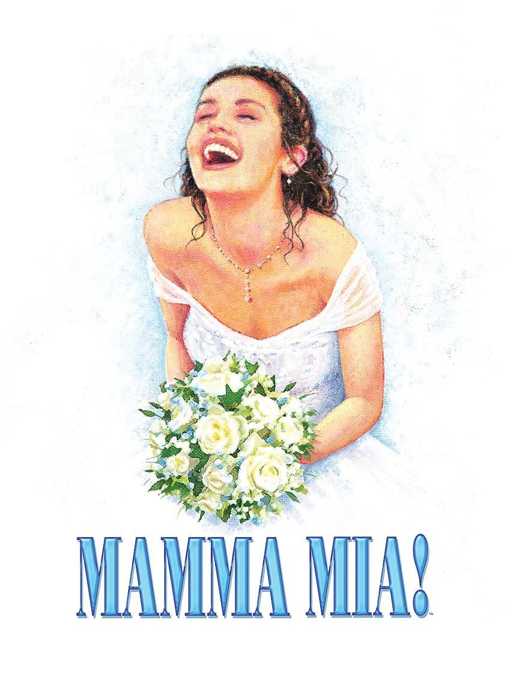
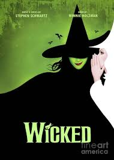
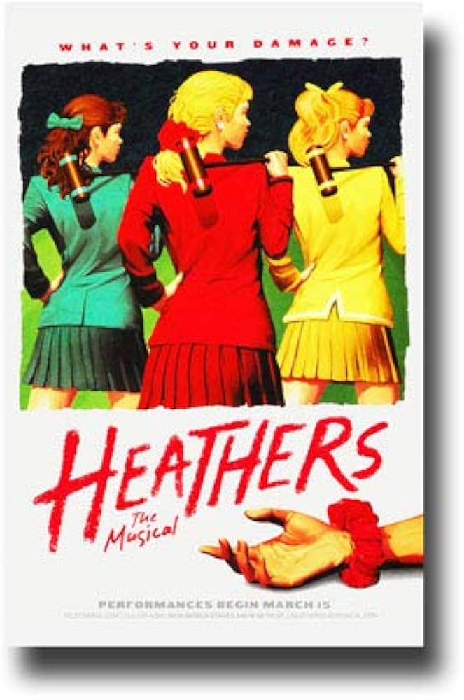
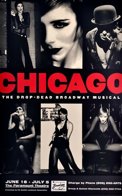

Mamma Mia!
Musical construído com canções do ABBA. A história gira em torno de Sophie e de sua busca por respostas sobre o passado.
Alguns dos títulos mais conhecidos do teatro musical.
Aqui estão alguns musicais ligados ao universo da Broadway com resumos curtos e diretos.
O objetivo é apresentar obras conhecidas de forma simples, sem deixar o conteúdo pesado.

Musical construído com canções do ABBA. A história gira em torno de Sophie e de sua busca por respostas sobre o passado.

Produção inspirada no universo de Oz. Mostra a relação entre Elphaba e Glinda antes da chegada de Dorothy.

Musical criado por Lin-Manuel Miranda. Mistura história americana, rap, hip-hop e teatro musical.

Baseado no filme de 1988. A trama acompanha Veronica em uma escola dominada por popularidade e conflitos.

Um dos musicais mais conhecidos da Broadway. A obra mistura crime, fama e números de jazz marcantes.

Baseado no filme de Tim Burton. A história acompanha Lydia e a presença caótica de Beetlejuice.
Em Nova York, um teatro com 500 ou mais lugares pode ser considerado da Broadway.
Muitos musicais começam em teatros menores antes de chegar aos palcos da Broadway.